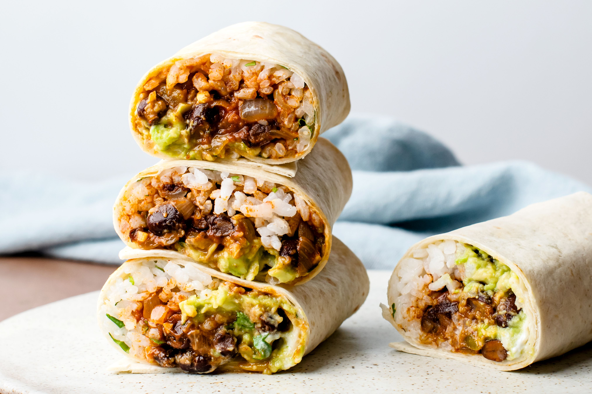

Burrito Recipes

Description
This is a quick and easy recipe for you to follow. It is a simple and healthy way for you to stay on track of your diet!
The recipe is flexible so please make it your own along the way!
Ingredients
- Chicken
- Black Beans
- Onions
- Spinach tortilla
Steps
- Cook your chicken to your liking with your own seasoning
- Put your chicken to the side and sautee your onion
- Add your black beans to the onions once the onions have caramalized
- Now add your cooked chicken to the onions and beans
- After mixing thoroughly, you can now add the ingredients ontop of your burrito